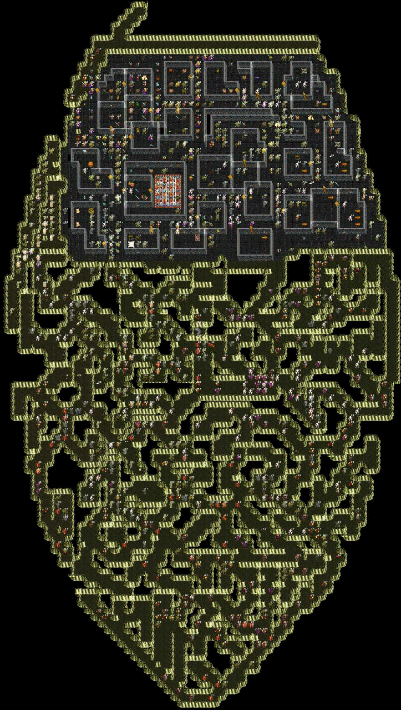

| The Haunt |
 |
| Map by Genesis__MOY |
| Climb down at the bonepile west of Juntes to reach the Haunt area. DarkOrges shoot arrows, Stunners stun and Apparitions blind. FireStorm Mace guys try to cook you. Mandrake rumored to be found here as well. Find the secret wall and climb up the stair to Arun's Lair. |
| Back to Cobrahn. |
| To Arun. |